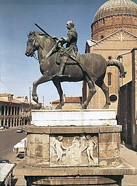
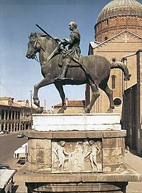

Modernism Movement
This definition of this movement was the conjunct of cultural movement, schools and styles that introduced art and design of the first half of the 20th century.
These cultural ensembles were classified:
- Music;
- Arts;
- Sculpture;
- Painting;
- theatre;
- Design;
 

There resembled aspects and differences between period modern and previous period because the modern word means everything that is contemporaneous and modern is not out-dated. Although, this term is not precision because many things created in the past were not out-dated and other things were, it was interpretative.
In the middle of 19th century, some ideas and forms government were emerged of the romantic period, because there were difference between what was real and what was subjective. The idea of the subjectivity dominated in that time.
The modernist movement arose for objective of opposite to the modernist movement because they wanted to bring back the realism and not be a vanguard movement.
- Futurism (this idea broke the idea of the past, because they wanted created forms less radical of the romantic time);
- Cubism (the art represented in geometric form);
- Dadaism (this movement was apology against the first world war, it means dada, in other words, baby words)>;
- Surrealism (vanguard movement, stimulate creativity abstract through unconscious);